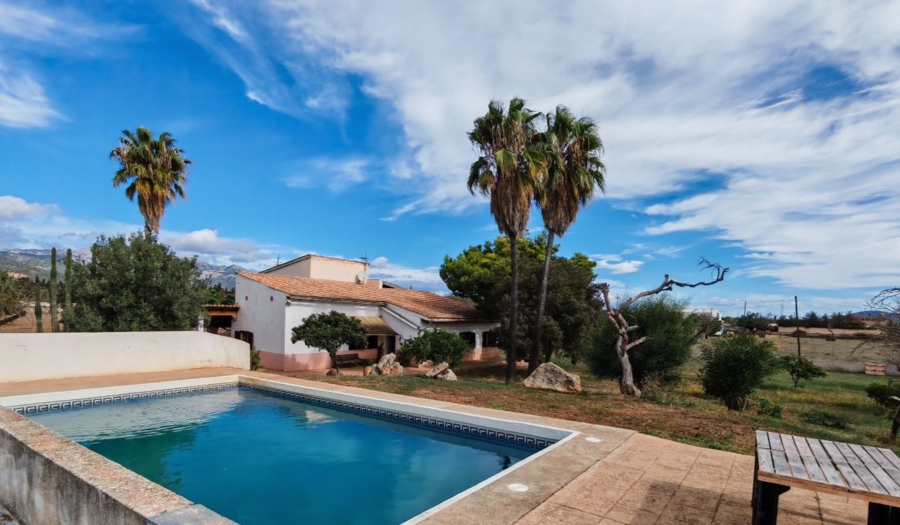

€750.000
Near Inca (interior) · Mallorca · Spain
Interior Inca brief fit: cozy mallorquina character (exposed timber beams, green shutters, terracotta floors/tiles, stone-clad patio pillar) mixed with habitable comfort, separate guest house, and a confirmed built private pool with Serra de Tramuntana views on 6.586 m². Ready to move in, not fixer/POR/communal. Under cap, not Sa Caleta, not on board 63 Mallorca stock.
Opened 1 Oct 2026 via MallorcAbsolut landhaeuser/ES inmobiliario. Objekt ID 841661. Asking €750.000. ~200 m² living / 6.586 m² land / 6 bed / 4 bath / energy G. Body: Haupthaus + separates Gästehaus, private Swimmingpool mit Blick auf die Serra de Tramuntana, barrierefrei und sofort bezugsbereit, garage, multiple terraces, Mediterranean garden. Distinct from board Inca-area stock. Gallery-verified pool + beam interiors + green-shutter exterior. Published/edited today (heute). ES twin: https://www.mallorcabsolut.com/es/inmobiliario/encantadora-finca-cerca-de-inca-con-casa-de-huespedes-piscina-y-vistas-espectaculares-a-tramuntana/
View listing